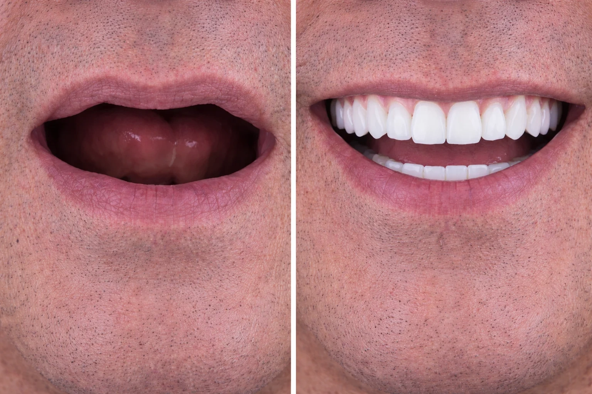

The Confidence Curve: Before and After a Dental Treatment That Transforms Your Smile

Table of Contents
- 1. How Dental Treatments Change Your Smile and Confidence
- 2. Before Treatment: Common Concerns and Preparation
- 3. During Treatment: What to Expect Step-by-Step
- 4. Immediate Aftercare: First Days and Weeks
- 5. Long-Term Outcomes: Maintenance and Lifespan of Results
- 6. Technology & Trends Shaping Better Outcomes
- 7. Real-World Examples and Case Studies
- 8. Choosing the Right Provider: Questions to Ask
- 9. FAQ: Common Patient Questions and Practical Answers
- 10. Taking the Next Step: How to Move Forward
- References and Further Reading
- Conclusion
1. How Dental Treatments Change Your Smile and Confidence
1.1 The psychological link between smile and self-esteem
Smiles are key in first impressions, social interactions, and self-perception. Both research and patient stories consistently show a noticeable boost in confidence after successful cosmetic and restorative dental procedures. Fixing issues like missing teeth or misalignment often leads to better social interactions, improved work performance, and overall wellbeing. These aren't just stories; surveys show measurable improvements in quality of life and self-esteem after smile restoration.
Beyond looks, the relief from chronic discomfort or embarrassment can make you smile more naturally, which encourages positive social feedback. Smiling more can improve mood and relationships, adding benefits beyond just dental results. Understanding this psychological link helps set realistic expectations and shows why a patient-focused plan matters.
1.2 Visual outcomes versus functional benefits
Many people focus first on how they’ll look: whiter teeth, straighter alignment, and uniform shapes. While looks are important, modern dentistry also focuses on functional improvements that last. Restoring bite balance, improving chewing efficiency, and protecting oral health are vital parts of a lasting smile transformation. For example, a crown or implant not only fills a gap visually but also prevents bone loss and keeps other teeth from shifting.
Balancing looks and function is key to a complete smile makeover. Dentists often combine treatments — orthodontics to align teeth, veneers or bonding to refine shape, and whitening to enhance color — while making sure the bite and gum health are set for stable long-term results.
1.3 Measurable improvements patients can expect
After treatment, patients usually see immediate changes like brighter, more even teeth and a more harmonious smile. Functional improvements like clearer speech, better chewing, and reduced sensitivity can show up quickly or take a short recovery period depending on the procedure. Many clinics track patient-reported outcomes and objective markers (e.g., bite measurements, gum health) to show progress over time.
The demand for aesthetic procedures is growing; the cosmetic dentistry market’s expansion reflects better access and higher patient expectations. When interventions are properly planned, they yield high satisfaction rates when realistic goals and maintenance plans are set from the start.
2. Before Treatment: Common Concerns and Preparation
2.1 Understanding your options and setting realistic goals
One common concern before treatment is uncertainty about which procedure balances cost, time, and aesthetics. A clear consultation with diagnostic imaging, perhaps including 3D scans or digital smile design, helps visualize expected results. Patient-focused care means dentists listen to personal goals — whether a subtle improvement or a full smile makeover — and plan accordingly.
Before committing, ask your provider to show before-and-after photos, explain alternatives, and outline maintenance. When possible, request a mock-up or temporary solution that illustrates the likely outcome; these tools support informed decisions and reduce post-treatment disappointment.
2.2 Financial planning and insurance considerations
Cost is often a barrier for cosmetic and restorative treatments. Many practices offer financing options, phased treatment plans, or a mix of preventative care and elective procedures to spread costs over time. Insurance coverage varies; restorative work like crowns or implants may be partly covered, while purely cosmetic procedures often are not. Discussing payment plans upfront avoids surprises and lets patients choose practical, staged approaches.
Practices that offer clear pricing and written estimates help patients compare options and feel confident in their investment. Ask about potential long-term savings too: addressing a problem early can prevent more expensive procedures later.
2.3 Preparing physically and mentally
Preparation includes both medical readiness and psychological readiness. Pre-treatment steps may involve improving oral hygiene, treating gum disease, or extracting unsalvageable teeth before prosthetic work begins. Mentally, knowing the timeline, potential temporary appearance changes, and recovery expectations helps reduce anxiety. Many clinics offer resources for patients with dental anxiety, and discussing sedation or relaxation techniques can improve comfort during procedures.
Good preparation reduces complications and enhances satisfaction with the final result. Clear communication with your dental team about medications, medical history, and personal concerns ensures safer and more comfortable treatment.
3. During Treatment: What to Expect Step-by-Step
3.1 Initial procedures and diagnostics
Most treatment journeys begin with comprehensive diagnostics: digital X-rays, 3D imaging, intraoral scans, and sometimes AI-assisted analysis to identify hidden issues and optimize planning. These technologies support precision and help the dentist tailor interventions to your anatomy and aesthetic goals. Diagnostic appointments often include detailed treatment timelines and temporary solutions to use between stages.
Accurate diagnostics reduce the risk of surprises during the active treatment phase and enable minimally invasive strategies where possible. The use of technology also shortens chair time and enhances predictability.
3.2 Typical timeline for common treatments
Timelines vary widely by procedure. Teeth whitening can be completed in a single visit, veneers may require two to three appointments over a few weeks, Invisalign® clear aligners typically require several months to 18 months depending on complexity, and implant-supported restorations can take several months including healing time. Full-mouth reconstructions and combined orthodontic-restorative plans will extend timelines but yield comprehensive results.
Understanding your personal timeline and any temporary limitations (dietary, speech, or aesthetic) helps you plan work, events, and social activities around treatment milestones. Your dental team should provide a clear schedule and contingency plans for unexpected developments.
3.3 Pain management and comfort strategies
Modern dentistry emphasizes patient comfort: topical anesthetics, local anesthesia with sedation options, and gentle surgical techniques reduce pain and anxiety. Many patients report minimal discomfort during procedures and manageable soreness afterward. For more invasive treatments like implants or extractions, your dentist will prescribe pain control and provide recovery instructions to promote healing and limit complications.
Discussing pain expectations and available comfort measures ahead of time improves the experience and helps patients adhere to post-operative care instructions, which in turn supports optimal outcomes.
4. Immediate Aftercare: First Days and Weeks
4.1 What changes you'll notice right away
Immediately after treatment, aesthetic changes can be dramatic: teeth may look straighter, whiter, or more uniform in shape. Functionally, you may feel the improved bite alignment or the stability of a new restoration. However, it's normal to experience temporary swelling, sensitivity, or differences in speech that generally resolve as tissues adapt. Your initial reactions may be emotional — excitement mixed with a short adjustment period — and that emotional response is a normal part of the transformation process.
Early follow-up appointments help monitor healing and allow minor adjustments to ensure comfort. Temporary restorations are often used to refine fit and appearance before finalizing permanent work.
4.2 Managing sensitivity, swelling, and dietary adjustments
Post-treatment sensitivity is common after whitening, bonding, or restorative work; it typically diminishes within a few days to weeks. For surgical procedures like implants or extractions, swelling and bruising may peak 48-72 hours after treatment and then gradually subside. Soft diets, cold compresses, and prescribed pain medications can significantly reduce discomfort. Following the dentist's dietary and hygiene recommendations shortens recovery and protects new restorations.
Adapting habits temporarily — avoiding very hot, cold, or crunchy foods — supports healing. Good oral care, including gentle brushing and saltwater rinses when advised, promotes tissue recovery and lowers infection risk.
4.3 Early emotional and social effects
The immediate aftercare period is also when many patients begin to notice changes in confidence. Some report a rapid increase in willingness to smile or speak in public, while others may experience a transitional phase of self-consciousness as they adjust to the new look. Support from the dental team and realistic expectations set during consultations help manage this phase. Many patients find that positive feedback from friends and family accelerates emotional benefits.
Documenting progress with photos can also reinforce satisfaction and track how healing changes the aesthetic outcome over weeks and months.
5. Long-Term Outcomes: Maintenance and Lifespan of Results
5.1 How long do results last?
Longevity depends on the procedure and maintenance. Professional whitening fades over months to a few years depending on lifestyle, but can be refreshed. Veneers generally last 10-15 years with proper care. Dental implants are designed to be long-term solutions and can last decades with good oral hygiene and regular dental visits. Orthodontic results require retention strategies, such as nightly retainers, to maintain alignment.
Understanding expected lifespans informs realistic decisions about investment and follow-up care. A maintenance plan crafted with your dentist supports predictable long-term outcomes and helps avoid premature replacements.
5.2 Daily care and professional maintenance
Daily care includes brushing twice a day with fluoride toothpaste, flossing, and avoiding habits that damage teeth (e.g., nail biting, using teeth as tools). Professional maintenance — regular checkups, cleanings, and occasional touch-ups — prevents small issues from becoming major problems. For patients with restorations, professional inspections ensure that margins remain sound and that underlying structures are healthy.
Integrating protective measures like custom nightguards for bruxism or sports mouthguards for athletes preserves restorations and prevents costly repairs. Your dentist can prescribe tailored protective appliances when indicated.
5.3 When to consider touch-ups or revisions
Minor aesthetic changes like discoloration or small chips can often be corrected conservatively with whitening or bonding. More significant wear, recurrent decay, or prosthetic failure may require crowns, replacement veneers, or implant revision. Early detection through regular visits reduces the complexity of interventions and preserves original outcomes. Discuss realistic revision pathways with your provider in advance so you know how to maintain your smile over decades.
6. Technology & Trends Shaping Better Outcomes
6.1 AI-driven diagnostics and treatment planning
Artificial intelligence is rapidly improving diagnostic accuracy, predicting treatment outcomes, and personalizing plans. AI tools analyze imaging to detect patterns that may be missed by the human eye, improving early detection and treatment precision. Practices that integrate AI can offer more predictable planning and realistic visualizations of post-treatment results, which helps patients set clear goals and feel more confident about proceeding.
While AI augments clinician expertise, patient outcomes still depend on a skilled dental team able to interpret technology and apply it within the context of whole-patient care.
6.2 3D printing and digital workflows
3D printing speeds the fabrication of models, surgical guides, temporary crowns, and even clear aligners, reducing turnaround times and improving fit. Digital workflows from intraoral scanning to virtual planning minimize manual errors and increase patient comfort by eliminating messy impressions. These technologies contribute to shorter treatment times and better-fitting restorations, enhancing both aesthetics and function.
For complex restorations, 3D-printed surgical guides enable precise implant placement that supports long-term success and predictable aesthetics, which is especially beneficial in full-mouth reconstructions and implant-supported prostheses.
6.3 Teledentistry and patient access
Teledentistry expands access for consultations, follow-ups, and triage. Virtual visits allow patients to discuss concerns, review treatment plans, and receive guidance without always visiting the office. By 2026, teledentistry is projected to account for a substantial portion of consultations, improving convenience and supporting timely care. Remote monitoring tools and patient education platforms further enhance engagement and adherence to aftercare.
While teledentistry cannot replace hands-on procedures, it complements in-office care, shortens decision timelines, and supports long-term follow-up.
7. Real-World Examples and Case Studies
7.1 Smile restoration case: A stepwise approach
Consider a patient who presented with missing molars, worn anterior teeth, and generalized staining. The treatment plan began with periodontal therapy and restorations of decayed teeth, followed by implant placement for missing molars and veneers for anterior aesthetics. Digital planning and temporary restorations allowed functional testing before final crowns and veneers were placed. Over six months, the patient reported less pain, improved chewing, and a marked increase in willingness to smile publicly.
Follow-up maintenance included a customized home-care routine and periodic checkups that preserved the restorative work and sustained the improved appearance for years.
7.2 Cosmetic boost: Whitening and bonding for instant change
A different patient sought a quick, minimally invasive upgrade for an upcoming event. Professional in-office whitening combined with targeted dental bonding on small chips and gaps delivered a harmonized, whiter smile in two visits. The immediate improvement increased the patient's confidence and social engagement, demonstrating how conservative cosmetic procedures can produce meaningful psychological benefits without major reconstruction.
These cases illustrate that both comprehensive and conservative approaches have roles depending on patient needs, timelines, and budgets.
7.3 Long-term transformation with orthodontics and implants
Another common scenario involves combining clear aligner therapy with implants to restore both alignment and missing teeth. Aligners first correct spacing and occlusion to ensure ideal implant positioning. After alignment, implants are placed and restored with crowns to match the adjacent teeth. The staged approach yields durable function and natural aesthetics, highlighting the value of coordinated, multi-disciplinary planning.
Patients who follow retention and maintenance protocols maintain alignment and implant health long-term, realizing sustained improvements in both function and confidence.
8. Choosing the Right Provider: Questions to Ask
8.1 Credentials, experience, and technology
Ask about your dentist's training, experience with the specific procedure you want, and the technologies they use. Practices that employ 3D imaging, digital workflows, and evidence-based protocols often achieve higher predictability. Request to see before-and-after galleries of actual patients and ask about complication rates and follow-up policies. A transparent provider will explain trade-offs and outline realistic outcomes clearly.
Choosing a clinic that emphasizes patient-centered care ensures that your individual needs and preferences are prioritized through the care journey.
8.2 Communication and long-term support
Effective communication is crucial. Your provider should discuss alternatives, timelines, and financial options and provide clear post-operative instructions. Long-term support — accessible emergency care, routine maintenance, and follow-up appointments — is an important marker of a reliable practice. Ask about how the team manages complications and what guarantees or warranties they provide for restorations.
Check patient reviews and ask for references when possible to get a sense of real patient experiences with the clinic’s communication and support systems.
8.3 Location, accessibility, and convenience
Convenience matters: easy scheduling, flexible payment plans, and location accessibility reduce friction and support adherence to treatment and maintenance. For residents in South Florida, selecting a practice that offers a mix of advanced technology and patient-friendly services can make a meaningful difference in both the quality of care and the overall experience. Choose a clinic that aligns with your expectations for convenience and comprehensive care.
9. FAQ: Common Patient Questions and Practical Answers
9.1 Will my treatment be painful?
Most modern dental procedures are performed with effective local anesthesia and sedation options when needed, so pain during the procedure is typically minimal. Post-operative discomfort varies by treatment but is usually manageable with over-the-counter or prescribed medications and proper aftercare. Discuss pain control preferences with your dentist in advance to ensure a comfortable experience tailored to your anxiety level and medical history.
9.2 How soon will I see results?
Some treatments like whitening or bonding deliver immediate visual changes, while orthodontics or implant restorations take several months. Long-term functional improvements may continue to manifest as tissues heal and the mouth adapts. Your personalized treatment timeline will outline expected milestones and interim appearances so you know what to expect at each stage.
9.3 Are cosmetic procedures covered by insurance?
Insurance coverage varies: medically necessary restorative work may receive partial coverage, while purely cosmetic procedures like veneers or elective whitening typically are not covered. Many practices offer financing plans to make cosmetic improvements more accessible. Always verify benefits with your insurer and request written estimates from the clinic before proceeding.
10. Taking the Next Step: How to Move Forward
10.1 Scheduling a consultation and what to bring
Begin with a consultation that includes a full examination, diagnostic imaging, and a conversation about goals and budget. Bring recent medical history, a list of medications, and photos of smiles you like to help communicate your aims. A comprehensive initial visit sets a clear path forward and allows the dental team to prepare realistic options and timelines.
If you're local to Aventura or the surrounding areas and ready to explore options, consider contacting a trusted local clinic to schedule an evaluation and discuss personalized treatment paths.
10.2 Personalized planning and realistic expectations
Your dentist will recommend a treatment plan that balances aesthetics, function, time, and cost. Expect a phased approach for complex needs and conservative alternatives for quick improvements. Clear communication about expected maintenance and potential future interventions helps you plan for both the short term and long term, ensuring your investment continues to deliver value.
10.3 Call to action: Start your smile transformation
If you’re ready to explore how dental treatment can transform your smile and boost your confidence, take the first step by scheduling a consultation. For a personalized treatment plan that combines modern technology with compassionate care, reach out to Aventura Dental Center. Our team offers a full range of services from professional teeth whitening to full smile makeovers, and we support patients through every stage of the process. If you have a dental emergency or immediate concern, we also provide accessible care through our emergency dentist services.
Call (305) 933-2501 or visit our website to book an appointment and start your journey toward a healthier, more confident smile.
References and Further Reading
For trusted public health information on oral health and prevention, see the Centers for Disease Control and Prevention oral health resources: https://www.cdc.gov/oralhealth/. For research and clinical resources on dental research and technologies, review the National Institute of Dental and Craniofacial Research materials: https://www.nidcr.nih.gov/. For professional guidelines and continuing education resources, the American Dental Association offers clinician-focused information: https://www.ada.org/.
These external resources complement clinical consultation and help patients understand the broader context of dental health, prevention, and innovation.
Conclusion
Dental treatment can be a life-changing investment in both health and confidence. The path from before to after encompasses emotional, functional, and aesthetic transformations supported by modern diagnostics, patient-centered care, and a clear maintenance plan. By understanding what to expect at each stage — preparation, treatment, immediate aftercare, and long-term maintenance — you can make informed choices that align with your goals and lifestyle.
Whether you seek minor cosmetic enhancements, full restorative work, or preventive strategies to avoid extensive procedures, partnering with an experienced dental team ensures outcomes that look natural and function well. When you combine evidence-based clinical care with clear communication and realistic expectations, the final result is more than a better smile: it’s a meaningful boost in confidence that can ripple across daily life.